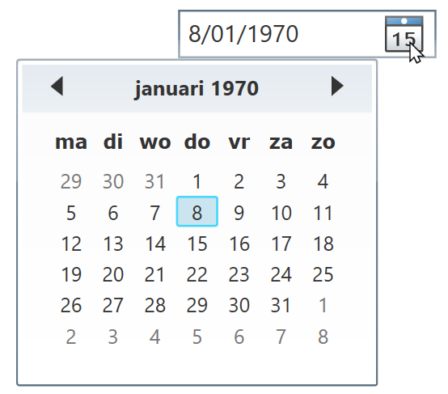

| Control | Omschrijving | Voorbeeld |
|---|---|---|
| Button | Knop waar gebruiker op kan klikken | |
| CheckBox | Keuzevakje (aanvinken), meerdere keuzes | |
| ComboBox | Drop-down menu om keuze te maken | |
| DatePicker | Datum laten selecteren (via kalender) |  |
| Image | Weergeven van afbeeldingen | |
| Label | Korte tekst weergeven (één regel) | |
| ListBox | Lijst met items weergeven (mogelijkheid tot selecteren) | |
| RadioButton | Keuzerondje (één exclusieve keuze) | |
| Slider | Waarde (getal) selecteren in een bereik d.m.v. schuiven | |
| TextBlock | Weergeven van lange blokken tekst (één of meerdere regels) | |
| TextBox | Invoer van vrije tekst (tekstveld, één of meerdere regels) | |
| Window | Het volledige scherm dat de controls bevat |
Een Button is een knop waarop de gebruiker kan klikken (bijvoorbeeld om een berekening uit te voeren).
| Naam | Omschrijving |
|---|---|
Content |
Bepaalt de tekst van de knop |
| Naam | Omschrijving |
|---|---|
| Click | Wordt afgevuurd wanneer de gebruiker op de knop heeft geklikt |
| MouseEnter | Wordt afgevuurd wanneer de gebruiker met de cursor over de knop beweegt |
| MouseLeave | Wordt afgevuurd wanneer de gebruiker met de cursor buiten de knop beweegt |
Een CheckBox is een keuzevakje dat de gebruiker kan aan/uit-vinken. Gebruik CheckBox indien je meerdere keuzes wilt aanbieden waarvan de gebruiker er één of meerdere van kan aanduiden.
| Naam | Omschrijving |
|---|---|
Content |
Bepaalt de tekst naast het vakje |
IsChecked |
true indien het vakje aangevinkt is, anders false |
| Naam | Omschrijving |
|---|---|
| Checked | Wordt afgevuurd wanneer de gebruiker het vakje aanvinkt |
| Unchecked | Wordt afgevuurd wanneer de gebruiker het vakje afvinkt |
if (chkThuisbezorgen.IsChecked == true)
{
// checkbox is aangevinkt
}chkThuisbezorgen.IsChecked = true; // false om af te vinkenEen ComboBox is een drop-down lijst met opties (ComboBoxItem's) waarin de gebruiker één item kan selecteren.
| Naam | Omschrijving |
|---|---|
Items |
Collection van alle ComboBoxItem's in de ComboBox |
SelectedIndex |
De index (positie) van het geselecteerde item (opgelet: begint bij 0!). Indien er geen optie geselecteerd werd, heeft deze property de waarde -1. |
SelectedItem |
Het ComboBoxItem-element dat op dat moment geselecteerd is. Indien er geen item geselecteerd werd, is de waarde van deze property null. |
| Naam | Omschrijving |
|---|---|
| SelectionChanged | Wordt afgevuurd wanneer de gebruiker een optie in de ComboBox selecteert |
Elke optie in een ComboBox wordt voorgesteld door een instantie van de klasse ComboBoxItem:

Hieronder vind je een overzicht van enkele handige property's die elk ComboBoxItem heeft:
| Naam | Omschrijving |
|---|---|
Content |
De inhoud van het item (dit is de tekst die voor deze optie zal weergegeven worden in de ComboBox) |
IsSelected |
bool die aangeeft of het item geselecteerd werd in de ComboBox (true) of niet (false) |
ComboBoxItem item = new ComboBoxItem(); // maak een nieuw ComboBoxItem
item.Content = "Oranje"; // stel de inhoud (tekst) van het item in
cboKleuren.Items.Add(item); // voeg het nieuwe item toe aan de collectie met items in de ComboBoxif (cboKleuren.SelectedIndex != -1)
{
// gebruiker heeft een item geselecteerd
}
else
{
// geselecteerde index is -1 → gebruiker heeft géén item geselecteerd
}OF
if (cboKleuren.SelectedItem != null)
{
// gebruiker heeft een item geselecteerd
}
else
{
// gebruiker heeft géén item geselecteerd
}// controleer eerst of er een selectie gemaakt werd!
if (cboKleuren.SelectedItem != null)
{
ComboBoxItem selectie = (ComboBoxItem)cboKleuren.SelectedItem; // cast naar ComboBoxItem
string inhoud = selectie.Content.ToString(); // zet inhoud van geselecteerde item om naar een string
// doe iets met variabele 'inhoud'
}foreach (ComboBoxItem item in cboKleuren.Items)
{
// doe iets met item, bv.: item.Content
}Een DatePicker is een control waarmee je een gebruiker een datum kunt laten invoeren door deze te selecteren via een kalender.
| Naam | Omschrijving |
|---|---|
SelectedDate |
De datum die de gebruiker geselecteerd heeft (type DateTime). Indien de gebruiker géén datum geselecteerd heeft, is de waarde van deze property null |
| Naam | Omschrijving |
|---|---|
| SelectedDateChanged | Wordt afgevuurd wanneer de gebruiker een datum selecteert |
// controleer eerst of gebruiker een datum geselecteerd heeft!
if (dpcGeboortedatum.SelectedDate != null)
{
DateTime datum = dpcGeboortedatum.SelectedDate.Value; // opgelet: .Value
// doe iets met variabele 'datum'
}Je kunt een Image-control gebruiken om een afbeeling weer te geven op het scherm.
| Naam | Omschrijving |
|---|---|
Source |
Bepaalt welke afbeelding getoond moet worden (locatie, Bitmap, ...) |
| Naam | Omschrijving |
|---|---|
| MouseEnter | Wordt afgevuurd wanneer de gebruiker met de cursor over de afbeelding beweegt |
| MouseLeave | Wordt afgevuurd wanneer de gebruiker met de cursor buiten de afbeelding beweegt |
imgPizza.Source = new BitmapImage(new Uri(@"afbeeldingen/pizza.png", UriKind.RelativeOrAbsolute)); // afbeelding: afbeeldingen/pizza.pngGebruik een Label om korte tekst (één regel) weer te geven, bv.: resultaat van een berekening, titel van een invulveld, ...
| Naam | Omschrijving |
|---|---|
Content |
De inhoud (tekst) van het label) |
double prijs = 9.95;
lblPrijs.Content = "€" + prijs;Een ListBox is een lijst die verschillende items (ListBoxItems bevat). De gebruiker kan één of meerdere items selecteren. In tegenstelling tot bij een ComboBox, zijn de opties in een ListBox altijd zichtbaar.
| Naam | Omschrijving |
|---|---|
Items |
Collectie die alle items (ListBoxItem's) in de ListBox bevat |
SelectedIndex |
De index (positie) van het geselecteerde item (opgelet: begint bij 0!). Indien er geen optie geselecteerd werd, heeft deze property de waarde -1. Gebruik deze property indien de gebruiker slechts één item tegelijkertijd kan selecteren. |
SelectedItem |
Het ListBoxItem-element dat op dat moment geselecteerd is. Indien er geen item geselecteerd werd, is de waarde van deze property null. Gebruik deze property indien de gebruiker slechts één item tegelijkertijd kan selecteren. |
SelectedItems |
Een collection van de ListBoxItem-elementen die op dat moment geselecteerd zijn. Gebruik deze property indien de gebruiker meerdere items tegelijkertijd kan selecteren. |
SelectionMode |
Geeft aan hoeveel items de gebruiker gelijktijdig kan selecteren (Single: één item (single selection), Multiple: meerdere items tegelijkertijd (multi-select)). |
| Naam | Omschrijving |
|---|---|
SelectionChanged |
Wordt afgevuurd wanneer de gebruiker een item in de ListBox (de-)selecteert |
Elke optie in een ListBox wordt voorgesteld door een instantie van de klasse ListBoxItem:
Hieronder vind je een overzicht van enkele handige property's die elk ListBoxItem heeft:
| Naam | Omschrijving |
|---|---|
Content |
De inhoud van het item (dit is de tekst die voor deze optie zal weergegeven worden in de ListBox) |
IsSelected |
bool die aangeeft of het item geselecteerd werd in de ListBox (true) of niet (false) |
ListBoxItem item = new ListBoxItem(); // maak een nieuw ListBoxItem
item.Content = "Brood"; // stel de inhoud (tekst) van het item in
lstBoodschappen.Items.Add(item); // voeg het nieuwe item toe aan de collectie met items in de ListBoxif (lstBoodschappen.SelectedIndex != -1)
{
// er werd (minimum) één item geselecteerd
}
else
{
// er werd geen item geselecteerd
}OF
if (lstBoodschappen.SelectedItem != null)
{
// gebruiker heeft (minimum) één item geselecteerd
}
else
{
// gebruiker heeft géén item geselecteerd
}// controleer eerst of er een selectie gemaakt werd!
if (lstBoodschappen.SelectedItem != null)
{
ListBoxItem selectie = (ListBoxItem)lstBoodschappen.SelectedItem; // cast naar ListBoxItem
string inhoud = selectie.Content.ToString(); // zet inhoud van geselecteerde item om naar een string
// doe iets met variabele 'inhoud'
}foreach (ListBoxItem item in lstBoodschappen.SelectedItems)
{
// doe iets met loop-variabele 'item', bv.: item.Content opvragen
}foreach (ListBoxItem item in lstBoodschappen.Items)
{
// doe iets met loop-variabele 'item', bv.: item.Content opvragen
}Een RadioButton is een keuzerondje dat de gebruiker kan aanduiden. Gebruik RadioButton's indien je de gebruiker verschillend opties wilt geven waarvan de gebruiker er slecht één van kan aanduiden.
Opmerking: indien je verschillende keuze-opties wilt aanbieden waarvan de gebruiker er meerdere tegelijkertijd moet kunnen aanduiden, maak je beter gebruik van CheckBox-controls.
RadioButton's die bij elkaar horen, kan je groeperen door deze dezelfde GroupName-property te geven. Binnen een groep van RadioButton's met dezelfde GroupName, kan telkens slechts één RadioButton tegelijkertijd aangeduid zijn.

| Naam | Omschrijving |
|---|---|
Content |
De tekst die naast het keuzerondje wordt weergegeven |
GroupName |
Property om bij elkaar horende RadioButtons te groeperen (zie uitleg hierboven) |
IsChecked |
true indien het keuzerondje aangevinkt is, anders false |
| Naam | Omschrijving |
|---|---|
| Checked | Wordt afgevuurd wanneer de gebruiker het keuzerondje aanvinkt |
| Unchecked | Wordt afgevuurd wanneer het keuzerondje wordt afgevinkt |
if (radKlein.IsChecked == true)
{
// optie 'klein' is aangevinkt
}
else if (radMedium.IsChecked == true)
{
// optie 'medium' is aangevinkt
} else if(radGroot.IsChecked == true)
{
// optie 'groot' is aangevinkt
}radAfhalen.IsChecked = true; // false om af te vinkenEen Slider is een control waarmee de gebruiker een numerieke waarde kan selecteren tussen bepaalde grenzen, door middel van een schuifbalkje.
| Naam | Omschrijving |
|---|---|
Minimum |
De kleinste waarde die de gebruiker kan selecteren |
Maximum |
De grootste waarde die de gebruiker kan selecteren |
Value |
De waarde die op dat moment geselecteerd is |
IsSnapToTickEnabled |
Indien true, moet de schuifbalk steeds op een streepje gezet worden |
TickFrequency |
De afstand tussen twee opeenvolgende streepjes (= 'ticks') |
| Naam | Omschrijving |
|---|---|
| ValueChanged | Wordt afgevuurd wanneer de gebruiker een waarde selecteert |
double waarde = sldVolume.Value;
// doe iets met variabele 'waarde' (bv.: weergeven in een Label)Een TextBlock is een control die gebruikt wordt om tekst weer te geven. In tegenstelling tot een Label, is het bij een TextBlock mogelijk om de tekst over meerdere regels te spreiden (multi-line strings). Daarnaast biedt een TextBlock uitgebreidere formatteringsmogelijkheden dan een Label.
| Naam | Omschrijving |
|---|---|
Inlines |
Een lijst met tekstfragmenten. Kan gebruikt worden om verschillende delen van de tekst een andere opmaak te geven |
Text |
De inhoud (tekst) die weergegeven wordt in het TextBlock |
TextWrapping |
Bepaalt de tekstterugloop indien de tekst te lang is om op één regel te passen. Mogelijke waarden zijn:
|
txtMyTextBlock.Text = "Hello, World!";Versie 1: met Environment.NewLine:
txtMyTextBlock.Text = "Eerste regel" + Environment.NewLine + "Tweede regel";Versie 2: met multi-line strings:
txtMyTextBlock.Text = @"Eerste regel
tweede regel";txtMyTextBlock.Inlines.Add("Voorbeeld tekst met ");
txtMyTextBlock.Inlines.Add(new Bold(new Run("vette (bold)"))); // tekst in het vet (bold)
txtMyTextBlock.Inlines.Add(", ");
txtMyTextBlock.Inlines.Add(new Italic(new Run("cursieve (italic)"))); // tekst in het cursief (italic)
txtMyTextBlock.Inlines.Add(" en ");
txtMyTextBlock.Inlines.Add(new Underline(new Run("onderlijnde"))); // onderlijnde tekst (underline)
txtMyTextBlock.Inlines.Add(" woorden.");Resultaat:

Een TextBox is een control waarmee de gebruiker vrije tekst kan invoeren (= tekstveld), zowel single line (op één regel) als op meerdere regels (multi-line).
| Naam | Omschrijving |
|---|---|
AcceptsReturn |
Indien true, kan de gebruiker de invoer spreiden over meerdere regels |
Text |
Inhoud van het tekstveld |
| Naam | Omschrijving |
|---|---|
| TextChanged | Wordt afgevuurd wanneer de inhoud van het tekstveld verandert |
string naam = txtNaam.Text;int lengte = Convert.ToInt32(txtLengte.Text);txtNaam.Text = "";OF
txtNaam.Clear();De Window-klasse omvat het volledige scherm waarop de verschillende controls staan.
| Naam | Omschrijving |
|---|---|
Title |
De titel van het scherm die bovenaan in de balk wordt weergegeven |
Width |
De breedte van het scherm (uitgedrukt in pixels) |
Height |
De hoogte van het scherm (uitgedrukt in pixels) |